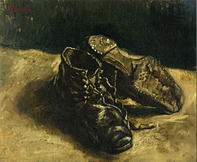
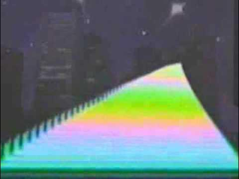
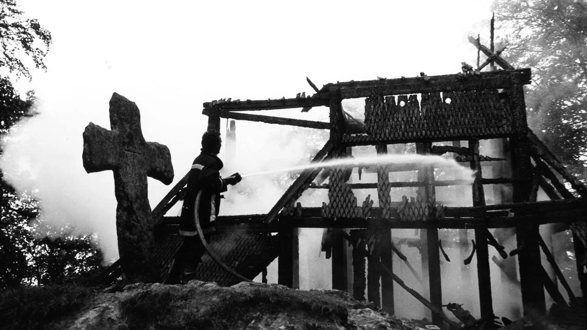

"For with the collapse of the high modernist ideology of style -- what is as unique and unmistakable as your own fingerprints, as incomparable as your own body (the very source, for an early Roland Barthes, of stylistic invention and innovation) -- the producers of culture have nowhere to turn but to the past: the imitation of dead styles, speech through all the masks and voices stored up in the imaginary museum of a now global culture.""
Fredric Jameson, today 89 years old remains one of the most important and shrewd observants of culture in the postmodern age. Jameson's meticulous study of Marxist criticism and Hegel led to a range of impactful publications that alongside the works of certain European intellectuals such as the Frankfurt School helped popularize critical theory in American Social Science which was still largely unknown in the United States in the early 1950s. In 1984 Jameson published "Post-modernism, or, the Cultural Logic of Late Capitalism" in the New Left Review, which would become a centrepiece in the canon of postmodern critique. Jameson argues that in postmodern-late capitalism there is no separation between cultural and economic production. Aesthetic production has become an economic necessity to preserve the ideological claims of cultural progress. The integration of capitalist modes of production into the cultural sphere consequently leads to distinct features of this new form of aesthetic produce.
Central to this new form of cultural production is the absence of depth. Jameson argues that the cultural artefacts of the postmodern age fail to orient themselves with the same historical and spatial awareness as the artistic object of the high modernist age. As primary example Jameson refers to Vincent van Gogh's painting Peasant Shoes. Van Gogh's painting represents, so Jameson the "Whole object world of agricultural misery, of stark rural poverty, and the whole rudimentary human world of backbreaking peasant toil, a world reduced to its most brutal and menaced, primitive and marginalized state." Van Gogh's shoes are, so the argument, a sensitive confrontation of the material world as they indicate traces of use and refer to a certain mode of existence. The work shoes that, according to an acquaintance of Van Gogh he picked up at a Parisian Flea market are representative of a class and the work it performs. The signifier, Van Gogh's shoes are in functioning communication with the signified, agricultural misery land so on].

In Contrast, Jameson presents us Andy Warhol's Diamond Dust Shoes. Jameson argues that Warhol's work does not speak to us with the same immediacy as Van Gogh's shoes: "Indeed, I am tempted to say that it does not really speak to us at all" When investigating Jameson's claim of depthlessness in Warhol's work the most apparent factor is the absence of its literal spatial depth. While Van Gogh's shoes present three dimensional features and tonal profoundness, Warhol's shoes are constituted from a two-dimensional silkscreen mono colour print. Secondly there is the absence of historical depth, or as Jameson calls it "historical deafness.”
The shoes look Fairly new and might have never been worn. The viewer who confronts it is Faced with the absolute absence of context. They are reduced to pure material signifiers, to unrelated objects, it is created beyond any reference to the real. Whether you want to call it spectacle or simulacrum, "meaningless" themes such as celebrity culture, media imagery, and consumerism are recurrent in Warhol's work and their success is yet another indicator of the central role they play in postmodernism.
The absence of context, or historicity as Jameson likes to call it is one of the central characteristics of cultural production in the postmodern age. Jameson refers to this phenomenon as the prevalence of Pastiche. Pastiche, so Jameson is the postmodern equivalent to the parodies of the modernist. While parody is a "systematic mimicry" of a norm which is reasserted by deviating from it, pastiche is the "random cannibalization of all the styles of the past." With the erosion of grand narratives in postmodernity such as the bourgeois ideology of the 19th century there is no norm to deviate from, no standard to contextualize oneself. The parody of the 20th century so becomes a neutral representation, "a statue with blind eyeballs." It has no understanding of the present moment, no immediate reality to feed of - it has no choice but to become "a vast collection of images, a multitudinous photographic simulacrum." With no coherent understanding of a collective timeline, the breakdown of a stable self in the chaos of cultural fragmentation, and the lack of authenticity in the proliferation of spectacles, the cultural producers of postmodernity have nowhere to turn but the past.
While in 1984 Jameson was still concerned with playing Warhol and Van Gogh off against each other, we are now left with the more disastrous excesses of postmodern idiocy. With the onset of AI generated art and a global hype for non-fungible tokens such as the "bored ape" series things are looking quite bad. Canadian literature critic Linda Hutcheon proposed a convincing counterargument about the postmodern parody ascribing it the capabilities of being "self-conscious, self-contradictory," and "'self-undermining." While those properties could be ascribed to some instances of the cultural mainstream of the last century, one can certainly not ascribe them to current AI models or the Bored Ape Yacht Club. And while it would be ridiculous to say that there is no contemporary self-conscious, self-reflective art, the vast majority of cultural production is characterized by an infinite shallowness and indifference to history. The few works that reflect upon the postmodern condition are only to be found on the peripheries of mainstream culture. Artificial Intelligence is probably the most recent trend in the art world. Most people seem to either hold the opinion that it will provide the means to absolute salvation, or that it will eventually lead to the annihilation of humankind. I would propose that its neither of those two options, but that it instead will slowly ease us into absolute boredom.
While the breakdown of previous conceptions of subjectivity led to the confusion of stylistic discernability. Al is the absolute eradication of any subjectivity, for the simple reason that it has none. AI claims to be the absolute subject, with humanity as its object, the content of observation. There is no self-reflectivity, no context within AI. It is the statue with blind eyeballs only that there were no eyeballs in the first place. AI feeds of the past to recreate the past and regurgitate it over and over. It is the unmitigated hauntology apparatus, that will not only slow down cultural innovation but end it once for all. Now one could say that the human brain does the same: information a and b of the past make invention e of the future - the future is nothing but the remediation of the past. If you believe so, then you must be the victim of some cartesian tomfoolery. Isn't there more to life than information, knowledge, datasets, (and so on)? Is human invention not led by affect, emotion, libido? Luckily AI is so essentially boring that eventually humanity will get rid of it. Like in Kubrick's 2001: A Space Odyssey Bowman can only discover the epic space baby when he decides to shut off HAL. Let's hope that unlike in 2001 nobody has to die for humanity to discover that AI sucks.

On the morning of October 8, 1955, Minnesota Southdale Center Shopping Mall first opened its door to visitors. The Mall was originally designed by Victor Gruen, who intended to recreate the vibrant town center of Vienna, his hometown in small. The original plan was to break up the flow of commerce with little attractions like fountains, galleries, and community squares. However, in implementation these features had to give way to more and more shopping opportunities. Gruen's design became the blueprint for every shopping mall that followed. Even though Gruen despised this, his design of the modern mall became synonymous with consumerist architecture. The excessive materialism, and conspicuous overconsumption that was provoked by the mall's layout was only concealed by overwhelming kitsch and sedating air conditioning. The mall is designed to be a place between worlds. No light from the outside makes it hard to judge whether it's day or night. The maze of conforming interior makes any sense of orientation impossible. There is no way out but only full compliance to the capitalist nightmare.
Vaporwave is, in many ways a satire to this form of plastic consumerism. Vaporwave emerged in the early 2010s as an electronic microgenre. It is defined by chopped and slowed down samples of 80s and 90s pop music often processed with a bunch of delay and reverb effects. The earliest instance of Vaporwave is the tape project 'Eccojams Vol. 1' by Chuck Person, an Alias of American producer Daniel Lopatin that was discussed previously on the hauntology archives. One of the most famous tracks that emerged from the genre is リサフランク420／現代のコンピュー by Macintosh Plus on the infamous release 'Floral Shopee.' By now the song has accumulated millions of streams and achieved meme status among online users. The cover art of the album is a typical instance of the Vaporwave aesthetic: ironic use of famous brand symbols, VHS visuals, and the simulation of early digitally animated landscapes. The Vaporwave aesthetic is defined by capitalist imagery, and ridicule consumerist statements. The unlicensed sampling of pop anthems is in itself a criticism to the capitalist ownership of intellectual property.
Vaporwave is an ode to the early stages of consumerist capitalism. It reminds of a time when the promises of western neoliberalism seemed to hold some potential. Social inequality, and ecological damage were still successfully hidden away behind the dazzling billboards and the dreamscape of artificial ice cream flavours. It makes us nostalgic for this feeling of unconscious comfort. However, as we all know those promises did not hold true. Vaporwave is at the same time a powerful reminder of how popular culture can be used to sedate and to distract from the emotional tribulations of the material world. The sampling process is what unveils the underlying melancholia of mainstream music. The dramatic slowness and repetition of particular phrases makes for a peculiar encounter with time. The music that serves as the raw material for Vaporwave is the music that most of the genres prominent interprets grew up on. As they got older their childhood dreams of plastic pop got chopped and screwed, so did the music. The guilty nostalgia is what ultimately haunts us, and if only we could go back to Victor Gruen's original mall design things could have been so much different.

On June 5th, 1992, the Fantoft Stave Church which is located in the Fana borough of Bergen, Norway was set on fire by the at that time 19-year-ola black metal pioneer Varg Vikernes, who is known to most as Burzum. It was a pivotal moment for the early Norwegian Black Metal Scene, as it harvested a lot of media attention for the boys that would come together in Oslo's Helvete Record Shop. The burning of Fantoft that was the first in a string of four church burnings was like a material manifestation of the wrath and darkness expressed in the music of Burzum, Mayhem, Darkthrone and so on. Norway was infested by the Satanic Panic. Black Metal was darker, more aggressive, brutal, and frightening and now everyone knew about it. Even King Harald. But from the very ranks of the excessive black metal circle a new sound would emerge. This Sound was Dungeon Synth.
You are walking through a misty valley, your feet sore but you're spirit vital. Taking a short rest on an obscurely shaped rock, you reminisce about the friends you made, the battles you fought, and the wisdom you gained on the path that lies behind you. You take a bite from the lembas bread that a small man gave you with good intention. From the mountains you hear a distant sound so strangely familiar that you pack your things to explore the mysterious multitimbral chimes, that remind you of your long forgotten childish longing for exploring the big mysteries of creation. You are led into a dark cave, and at the end of the corridor you find a room filled with the light of a singular torch. What you find is beyond what you or anyone has ever seen or heard. It is the secret gathering of the obscure synth-wizard alliance, all extracting the most beautiful, all the same enchanted and dark compositions from a Yamaha DX7 and two Roland D-50 FM Synthesizers.
This might be a good approximation to what the sound of Dungeon Synth, Medieval Ambient, Neo Classical, Battle Synth, Dungeon Noise, Comfy Synth, Goblin Drone, Forest Synth, or whatever you want to call it feels like. The beginnings of Dungeon Synth are often traced back to the release of Mortiis' "Era 1" Material, but Jim Kirkwood's "Where Shadows Lie, Vidar Ver's "Unknown Truths," and Burzum's self-titled debut album are also important to mention. In 1993 Mortiis self-released the first demo of his tape project "The Song of a Long forgotten Ghost,” that he for the first time would refer to as dark dungeon music. From there many Black Metal artists started side projects where they would turn away from the aggressive sound of their black metal project to more mysterious, inter-worldly soundscapes. It is undeniable that it was the New-Age synthesizer music of groups like Tangerine Dream and artists like Klaus Schulze, but also the esoteric sound of early Krautrock like Florian Fricke's Popol Vuh that had a big influence on the Proto-Dungeon Synth music of Mortiis and other artists.
Dungeon Synth has always had a dedicated fan community, and thus a lot of it has been produced over the past decades. Only recently has Dungeon Synth gained a lot more attention, and many young producers turn to the fantastical sound of otherworldly realms again. Artists like Quest Master, Hole Dweller, and Ornatorpet keep putting out Tapes further exploring the sound in the style of the early recordings of Mortiis and Burzum.
Unfortunately, as Dungeon Synth is part of Black Metal fandom, there is a lot of historical links between the genre and fascism. Because of that it is also hard for me to explore the hauntological nostalgia in Dungeon Synth music as some of it is infiltrated by right wing ideologies. The desires expressed in Dungeon-Synth call for a medieval-esque, primitivist past where harmony with nature is restored and life is simple. Within this fantasy lurk reactionary, conservative, misogynistic, and nationalistic tendencies. That is why we have to examine it attentively and with care, to call out those that are fascists and destigmatize those that aren't. Luckily this is mainly an issue of the past. As every aware black metal fan knows, there are many artists who distance themselves from this political spectrum. One of them is Paysage D'Hiver, a Black Metal and Dungeon Synth legend that has always taken a stance against fascist thought. Also, contemporary Dungeon Synth artists take a stance against nazis. Abe Goren for example publicly speaks out against right wing bands and expresses his antifascist politics in his Dungeon Synth projects. Other explicitely antifascist DS projects include: Noir Donjon, Touza Senra, Phan-tome, Dragon Altar, Skymning, Resina-tor, Algia Dawn, Taur Nu Fuin, I Run Realm, Fen Walker, and many more.
It is just funny to think that the same people that would burn down chur-ches, worship satan, and kill their fellow band members would create a sound so soothing and comfy. Yet this is just one side of Dungeon-Synth. Most of it can also be as dark and heavy as the True Norwegian Black Metal of which some scandinavian elders have still to recover. Make sure to give it a listen, and it might respark your dreams of adven-ture. After all we have a deep longing for the big mysteries we may discover once we enter the dark realms of our imagination.